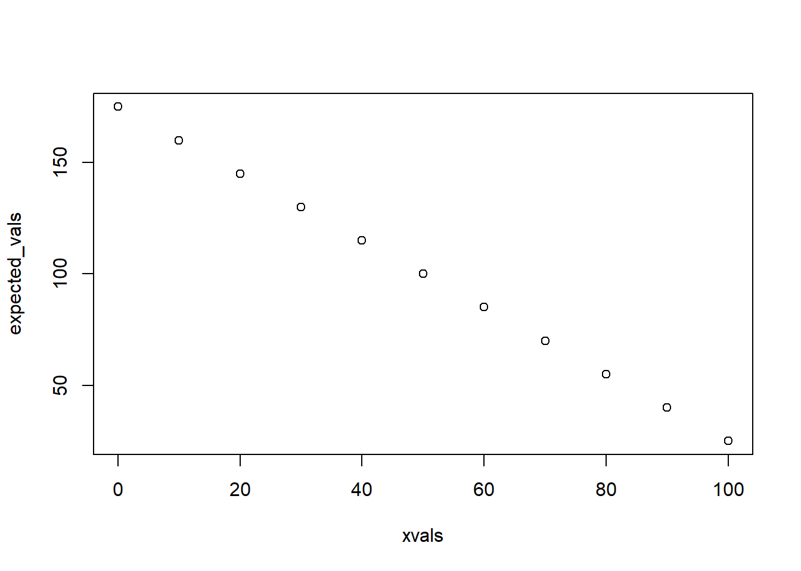

The Virtual Ecologist
NRES 746
September 10, 2016
NOTE: some of this demo borrows from Hadley wickham’s presentation: Simuation
Why simulate ‘fake data’?
- Formalize your understanding of the data generating process
- Formalize your understanding of how sampling methods and uncertainty potentially affect information recovery
- Power Analysis!
- Sampling design!
- Test whether model fitting algorithms and statistical tests do what you think they should (e.g., estimate parameters correctly)! (test for bias, precision, etc.)
Severe violations of academic integrity
We have simulated data in class already!
Random numbers (from known distribution)
runif(1,0,25) # simulate arbitrary # of samples from dist with arbitrary params
rpois(1,3.4)
rnorm(1,22,5.4)First argument: n, number of samples to generate
Subsequent arguments: parameters of the distribution
- Always check that the distribution is parameterised the way you expect!
Short exercise #1:
- Generate 50 samples from \(N(10,5)\)
- Generate 1000 numbers from \(Poisson(50)\)
- Generate 10 numbers from \(Beta(0.1,0.1)\)
The model
For our purposes, the model is the data-generating process.
The model could be as simple as the random numbers you were just generating. That is we might assume that the sample data were generated from a Poisson process with mean equal to the sample mean.
In general, the models we will consider are composed of deterministic and stochastic components.
For example, ordinary linear regression consists of a determistic component (\(y = ax + b\)) and a stochastic component (residuals are normally distributed).
decomposing ordinary linear regression:
First, let’s look at the deterministic component:
xvals = seq(0,100,10) # simulated x values define parameter space
deterministic_component <- function(x,a,b){
linear <- a + b*x # linear functional form
return(linear)
}
expected_vals <- deterministic_component(xvals,175,-1.5)
expected_vals## [1] 175 160 145 130 115 100 85 70 55 40 25plot(xvals,expected_vals)
Now, let’s look at the stochastic component:
stochastic_component <- function(x,variance){
sd <- sqrt(variance)
stochvals <- rnorm(length(x),x,sd)
return(stochvals)
}
sim_vals <- stochastic_component(expected_vals,variance=500)
plot(xvals,sim_vals)
# ALTERNATIVELY:
sim_vals <- stochastic_component(deterministic_component(xvals,175,-1.5),500) # stochastic "shell"You can think of the deterministic component as the “signal” and the stochastic component as the “noise”. Most data-generating processes that we will consider have both!
Replication!!
Wherever there is randomness, we can get different results every time (that’s what it means to be random!). In such cases, a single output of the data generating model by itself has no great meaning. However, we can extract a good deal of meaning if we run lots of replicates The distribution (‘cloud’) of replicates becomes the real result!
Goodness-of-fit (can this model plausibly generate the observed data?)
For example, let’s run a goodness-of-fit test. Here are our real data:
realdata <- c(125,50,90,110,80,75,100,400,350,290,350)
plot(xvals,realdata)
Is this linear regression model (a=10,b=4,var=1000) a good fit to the data?
#### initialize:
reps <- 1000 # number of replicate datasets to generate
samplesize <- length(xvals)
results <- array(0,dim=c(samplesize,reps)) # storage array for results
for(i in 1:reps){
exp_vals <- deterministic_component(xvals,a=10,b=4)
sim_vals <- stochastic_component(exp_vals,1000) # stochastic wrapper!
results[,i] <- sim_vals
}
# now make a boxplot of the results
boxplot(lapply(1:nrow(results), function(i) results[i,])) 
Now let’s overlay the real data.
boxplot(lapply(1:nrow(results), function(i) results[i,]),xaxt="n")
axis(1,at=c(1:length(xvals)),labels=xvals)
points(c(1:length(xvals)),realdata,pch=20,cex=3,col="red",xaxt="n")
How well does this model fit the data? Is this particular model likely to produce these data? (we will revisit this concept more quantitatively when we get to likelihood-based model fitting!)
Generating sampling distributions (i.e., the distribution of test statistcs for many many independent samples)
For example, the ‘brute force’ t-test from the first lecture:
reps <- 1000 # number of replicate samples to generate
null_difs <- numeric(reps) # storage vector for the test statistic for each sample
for(i in 1:reps){
sampleA <- sample(popData_null,size=sample.size) # sample representing "groups" A and B under the null hypothesis
sampleB <- sample(popData_null,size=sample.size)
null_difs[i] <- mean(sampleA)-mean(sampleB) # test statistic (model result)
}
hist(null_difs) # plot out the sampling distribution
abline(v=observed_dif,col="green",lwd=3)NOTE: Frequentist statistical tests are based on a data sample that is inherently a single replicate from a theoretically infinite number of possibilites. However, the interpretation of the results is implicitly based on the idea of replication (“if the null hypothesis were true, and the experiment were replicated lots and lots of times, results as or more extreme as the observed results could be expected from x% of replicates”)
Power analysis!! (can my sampling design detect the “signal”?)
When designing experiments or field monitoring protocols, we often ask questions like:
- What sample size do I need to be able to address my research questions?
- What is the smallest effect size I can reliably detect with my sampling design?
- What sources of sampling or measurement error should I make the greatest effort to minimize?
In such cases, probably the most straightforward way to address these questions is to simulate data under various sampling strategies and error structures, and see how well we can recover the “true” signal through the noise!
Power analysis, example
Imagine we are designing a monitoring program for a population of an at-risk species, and we want to have at least a 75% chance of detecting a decline of 25% or more over a 10 year period. Let’s assume that we are using visual counts, and that the probability of encountering each organism visually is 2% per person-day. The most recent population estimate was 1000.
What we know:
- A single person has a 2% chance of detecting each animal in the population in a day of surveying
- The initial abundance is 1000
- We need to detect a decline as small as 25% over 10 years with at least 75% probability.
First, let’s set the groundwork by making some helper functions (break the problem into smaller chunks):
This function takes the true number in the population and returns the observed number:
NumObserved <- function(TrueN=1000,surveyors=1,days=3){
probPerPersonDay <- 0.02
probPerDay <- 1-(1-probPerPersonDay)^surveyors
probPerSurvey <- 1-(1-probPerDay)^days
nobs <- rbinom(1,size=TrueN,prob=probPerSurvey)
return(nobs)
}
NumObserved(TrueN=500,surveyors=2,days=7)## [1] 132This function gives us the current-year abundance using last years abundance and trend information
ThisYearAbund <- function(LastYearAbund=1000,trend=-0.03){
CurAbund <- LastYearAbund + trend*LastYearAbund
CurAbund <- floor(CurAbund) # can't have fractional individuals!
return(CurAbund)
}
ThisYearAbund(LastYearAbund=500,trend=-0.03)## [1] 485This function will simulate a single dataset (time series of observations over a given number of years)!
SimulateMonitoringData <- function(initabund=1000,trend=-0.03,years=25,observers=1,days=3,survint=2){
prevabund <- initabund
detected <- numeric(years) # set up storate variable
for(y in 1:years){
thisAbund <- ThisYearAbund(prevabund,trend) # compute the current abundance on the basis of the trend
detected[y] <- NumObserved(thisAbund,observers,days) # sample the current population using this monitoring scheme
prevabund <- thisAbund # this years abundance becomes the previous years abundance
}
surveyed <- c(1:years)%%survint==0 # which years were surveys actually performed?
detected[!surveyed] <- NA
return(detected)
}
SimulateMonitoringData(initabund=1000,trend=-0.03,years=25,observers=1,days=3,survint=2)## [1] NA 45 NA 60 NA 43 NA 31 NA 49 NA 35 NA 34 NA 38 NA 38 NA 32 NA 31 NA
## [24] 26 NANow we can develop a function for determining if a decline was in fact detected by the method:
IsDecline <- function(monitoringData,alpha=0.05){
time <- 1:length(monitoringData)
model <- lm(monitoringData~time) # for now, let's use ordinary linear regression
p_value <- summary(model)$coefficients["time","Pr(>|t|)"]
isdecline <- ifelse(summary(model)$coefficients["time","Estimate"]<0,TRUE,FALSE)
sig_decline <- ifelse((p_value<=alpha)&(isdecline),TRUE,FALSE) # if declining and significant trend
return(sig_decline)
}
IsDecline(monitoringData=c(10,20,NA,15,1),alpha=0.05)## [1] FALSENow we can develop a “power” function that gives us the statistical power for given monitoring scenarios…
This is part of this week’s lab assignment!
nreps <- 10000
initabund <- 1000
GetPower <- function(observers=1,days=3,alpha=0.05,years=25,survint=2){
# fill this in!
return(Power)
}## The statistical power to detect a decline for the default parameters is: 0.383And we can evaluate what types of monitoring programs might be acceptable: